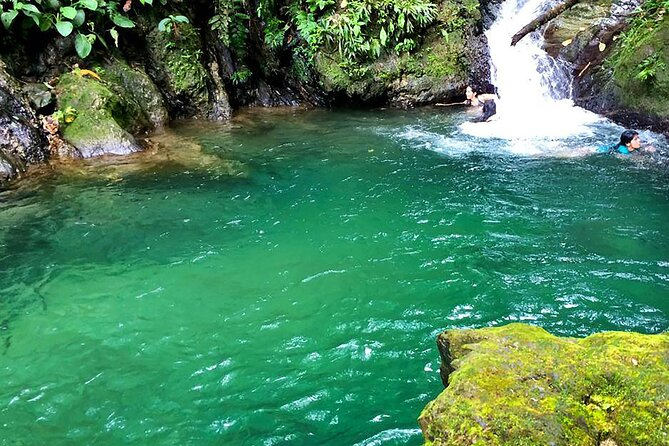
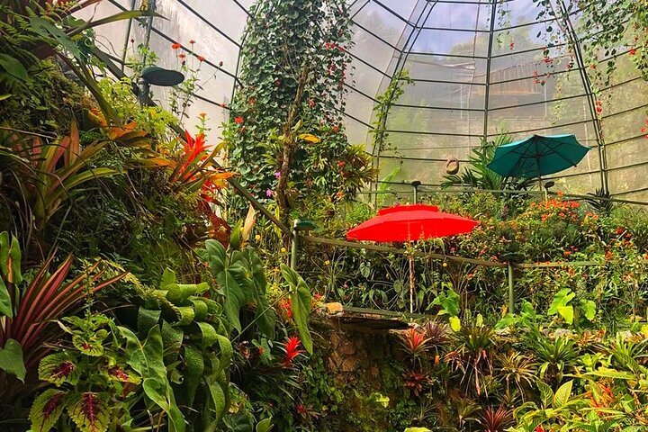
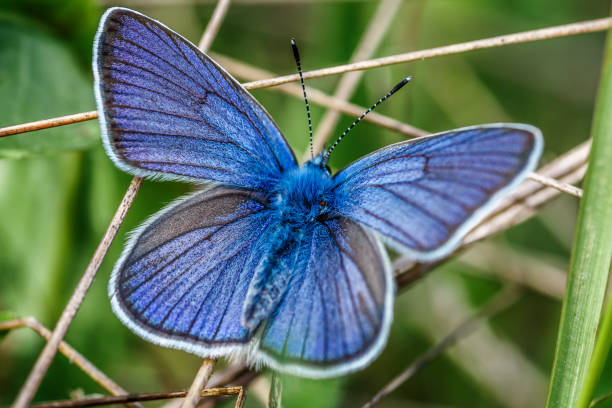
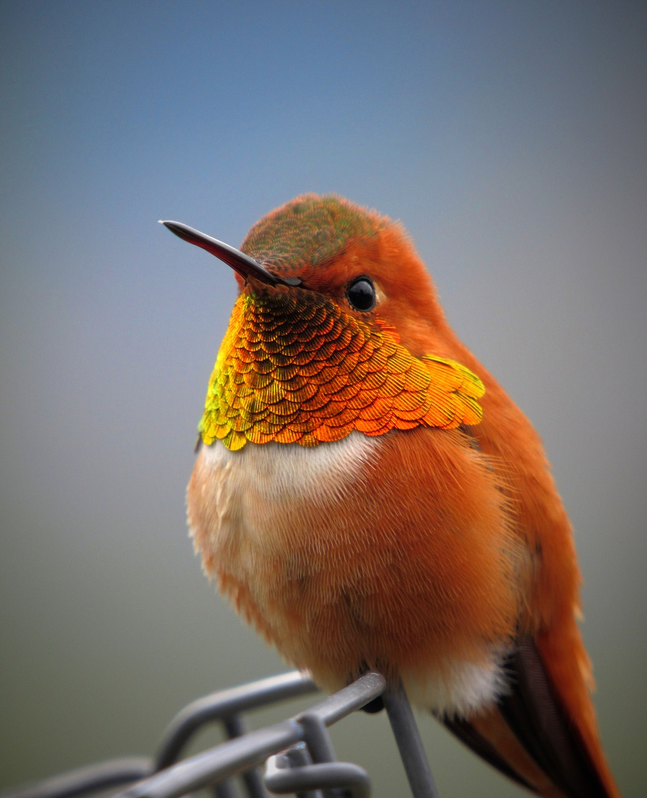
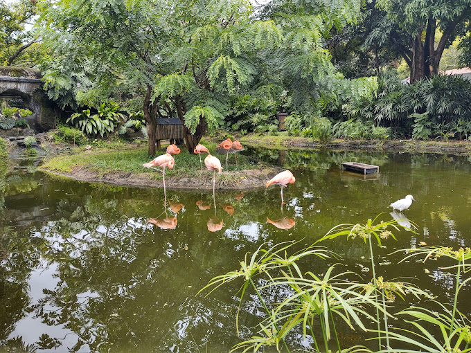
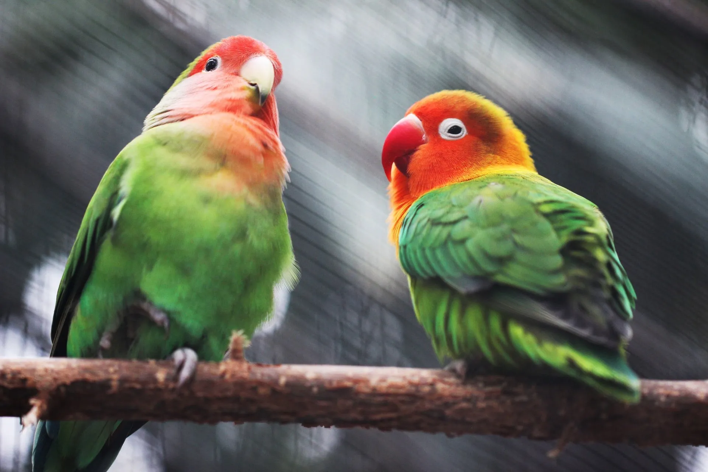

"Descubre con nosotros la magia de Cali", una ciudad vibrante rodeada de naturaleza exótica. Es un santuario para los amantes de la fauna y flora, te invitamos a observar una asombrosa variedad de aves, mariposas y demás destinos ecológicos, explorando hermosos senderos tropicales, con experiencias dirigidas en grupo o individuales.
Encuentra con nosotros las actividades que más se acoplen a tus necesidades, te podemos indicar los más atractivos y diversos recorridos, para que te maravilles de nuestra ciudad y su riqueza natural. Sumérgete en una experiencia inolvidable y conecta con la naturaleza en su forma más pura. ¡Cali te espera!
Programa tu visita y descubre los rincones ecológicos más impresionantes...
"Reserva ahora y embárcate en una aventura única!"